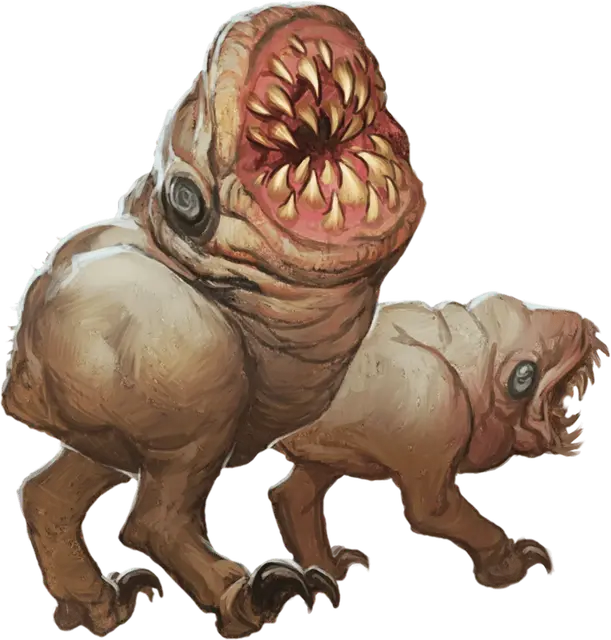

Мерзкий угнетённый
Wretched Sorrowsworn
Маленький Монстр, обычно нейтрально-злой

Класс Доспеха 15 (природный доспех)
Хиты 10 (4к6 - 4)
Скорость 40 футов
| мод | спас | ||
|---|---|---|---|
| СИЛ | 7 | −2 | −2 |
| ЛОВ | 12 | +1 | +1 |
| ТЕЛ | 9 | −1 | −1 |
| мод | спас | ||
|---|---|---|---|
| ИНТ | 5 | −3 | −3 |
| МДР | 6 | −2 | −2 |
| ХАР | 5 | −3 | −3 |
Чувства тёмное зрение 60 футов
Опасность 1/4 (50 опыта)
Бонус мастерства +2
Среда обитания Болото, Город, Подземье
Особенности
Сопротивление урону. дробящий, колющий и рубящий, пока находится в области тусклого света или тьмы.
Мерзкая тактика стаи. Угнетённый совершает с преимуществом броски атаки против существ, если в пределах 5 футов от существа находится дееспособный союзник угнетённого. В противном случае, он с помехой совершает броски атаки.
Действия
Укус. Рукопашная атака оружием: +3 к попаданию, досягаемость 5 футов, одна цель. Попадание: 6 (1к10 + 1) колющего урона, и угнетённый прицепляется к цели. Пока угнетённый находится в таком положении, он не может атаковать и в начале каждого хода угнетённого, цель получает 6 (1к10+1) урона некротической энергией.
Прицепившийся угнетённый передвигается вместе с целью всякий раз, когда цель движется, не требуя никаких движений угнетённого. Угнетённый может отцепиться, потратив 5 футов движения на своём ходу. Существа, включая саму цель, могут использовать действие, чтобы отцепить угнетённого.
Описание
Отвратительные маленькие чудовища, мерзкие угнетённые или просто Мерзость, собираются в большие стаи и охотятся по Царству Теней в поисках добычи. Эти жалкие существа кормятся жизненной силой, поэтому, когда они находят подходящее существо, немедленно бросаются на него, желая погрузить свои клыки в его плоть для того, чтобы поглотить его жизненную силу и испытываемый страх.
Угнетённый
Повсеместная тоска Царства Теней порой порождает странные воплощения мрачной сущности плана. Угнетённые воплощают формы мучений, что свойственны в этой тёмной местности, а их внешность наводит ужас на тех, кто встретит их на своём пути. Каждый угнетённый олицетворяет различные проявления отчаяния, либо страдания.